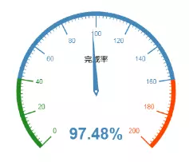
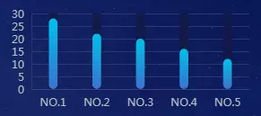
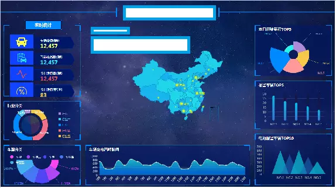
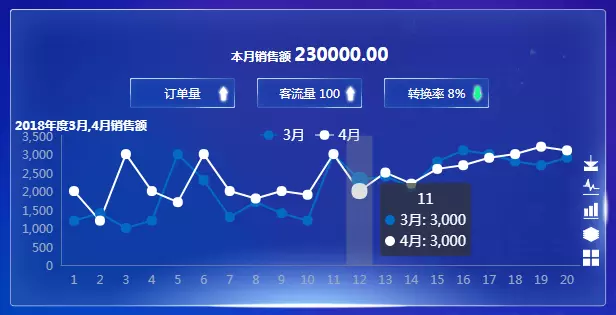
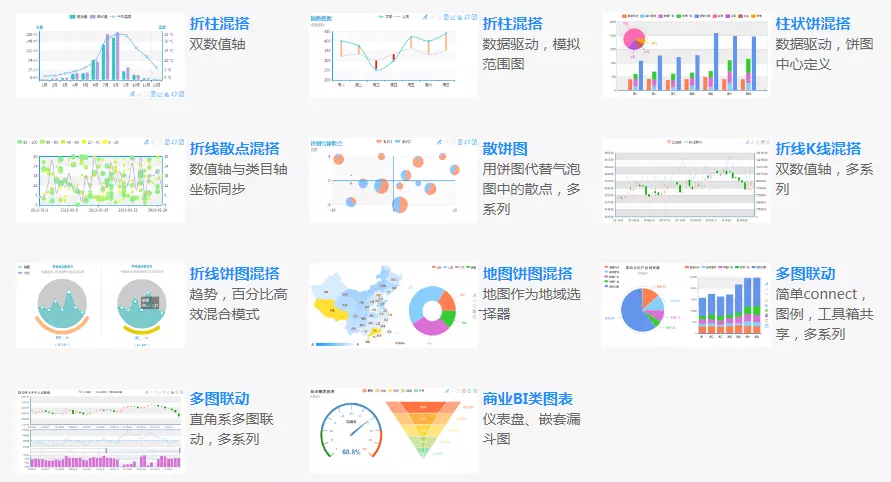

数据可视化，目的是为了让纷繁的数据变得直观，更易领会数据代表的趋势、模型等。既然是带着目的的，应先把目标明确下来。目标写下来，思想上算落地了，那么就能给大脑腾出继续深入或扩展的空间。所以，写下目标就有进度，就可完善，从而最终可体系化。而相反，则可能让精力耗尽且仍止步于或局限于某几个点！
可视化之前，你应该先构思，而不是先找模板。但平时可以在看到一些上眼的可视化页面时多多观察！
完成最终的可视化，要解决三个问题
（1）维度：即要展现数据的哪些侧面，它也一定程度上决定了使用的图表类型（外观）。
如，一维的某一方面单一的统计结果，或是百分比等。

多维的按地区、按月的相关数据，同比环比等。

（2）图表布局，表意，自适应，全屏，支持事件。
可视化屏通常在较大的宽屏上显示，通常会用一个业务相关的大背景衬托。然后根据实际情况，可以考虑分几列，其中，中间留一大块做热点图或综合性辐射图等。具体形式则不限于此，事实上，色调搭配合理，重点突出即可。
为了能在多场景下使用，可一定程度的做好屏幕自适应。
对于地图或有必要进一步展开的重点信息，可以增加相关触发事件，如鼠标移动、点击等，进行数据浮动显示，或跳转，或是更新相关联版块数据等。

（3）数据加载机制：数据来源，更新机制等。
在可视化界面上，往往有多个维度的数据，而且动态的计算量也是比较大的，这可能导致两个问题。
1.演示页面的加载速度问题
2.数据获取的稳定性问题
针对第1个问题，基本思路是数据应该提前准备在缓存中，首次加载直接从缓存中取数据。对于单页应用，还可以提前直接将数据更新到本地静态文件中，做到可离线展示。数据获取的稳定性，主要是做好容错处理。同时，不同的场景对数据动态的实时性要求不一样，关键是抓好几个相关的重要指标。
突出关注点，突出优势，适当存在复杂度高的图表。
（1）始终要围绕目标，突出要关注的数据。
（2）要突出优势，数据可视化有一种重要的职能就是作展示用，对于能代表自身优势的指标要加以强调。
（3）适当的在局部加上复杂度相对较高的图表，这些图表即有务实的意义（多个维度综合展示），又有务虚的一面，更显专业。

个人推荐使用 ECharts，图表全面，文档齐全，示例丰富。其官方网站为：https://echarts.baidu.com/
示例站点为：https://echarts.baidu.com/echarts2/doc/example.html

可以从以下链接下载到一些模板，这个资源已下载验证过，其中几套模板还不错，可以参考一下：
https://download.csdn.net/download/qiangbaixiao/10833443
如果积分不够，也可以关注“时间维度”公众号，留言后可直接发。